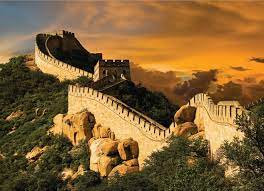

muralla china

La Gran Muralla China es una antigua fortificación china, ? construida y reconstruida entre el siglo V a. C. y el siglo XVI para proteger la frontera norte del Imperio chino durante las sucesivas dinastías imperiales de los ataques de los nómadas xiongnu de Mongolia y Manchuria. Wikipedia